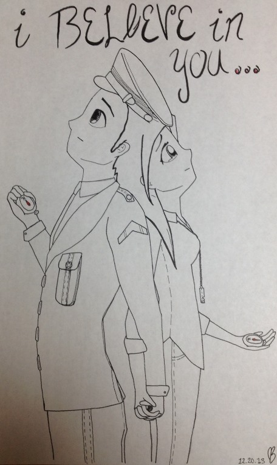

Hey there, I’m Jess. I was born in 1995 and I have lived in Spokane Washington my whole life. After two years of running start, at Spokane Falls Community College, I transferred to Eastern Washington University with my AA degree. My degree at Eastern is Visual Communication Design and I have not decided on a major yet. In July of this year, 2014, I will be heading to Australia for study abroad to attend Griffith University.
My life goal is to travel the world and write sci-fi adventure novels. On top of writing I enjoy art, any kind of art, from visual to preforming. I have done theater my whole life and plan on continuing on the side of whatever else I'm doing. I very much enjoy singing and playing the piano, as well. I play many instruments but the piano is my favorite, I've played since I was eight. Now I enjoy writing songs along with learning new ones. Another one of my hobbies is drawing. I love all kinds of visual art.
The picture to the left is titled “I believe” and was something I did with the concept of people in the military and how it affects the people they leave back home. This is a conceptual peace that gives the feeling of distance yet connection. Even when people’s lives take them in different directions, we remain one. This was pulled from some personal experiences but I believe that this is a feeling everyone can relate to and has experienced.
This painting of the lightning storm was done on a wall with the proportions of 90in by 151in. The mosaic was done with premium latex paint. I enjoyed doing this piece because it was at such a large scale and it required a different level of painting skill then canvas. I was able to be a little more detailed due to the size.
The picture of the ballerina is an acrylic imitation of an old famous acrylic painter, whose name eludes me at the moment but I will add when I remember. This was an assignment for an acrylic painting class: chose a painter and one of their works and redo it to the best of our ability. I am very proud of how this painting tuned out and really encouraged me to continue my journey in painting and acrylics.